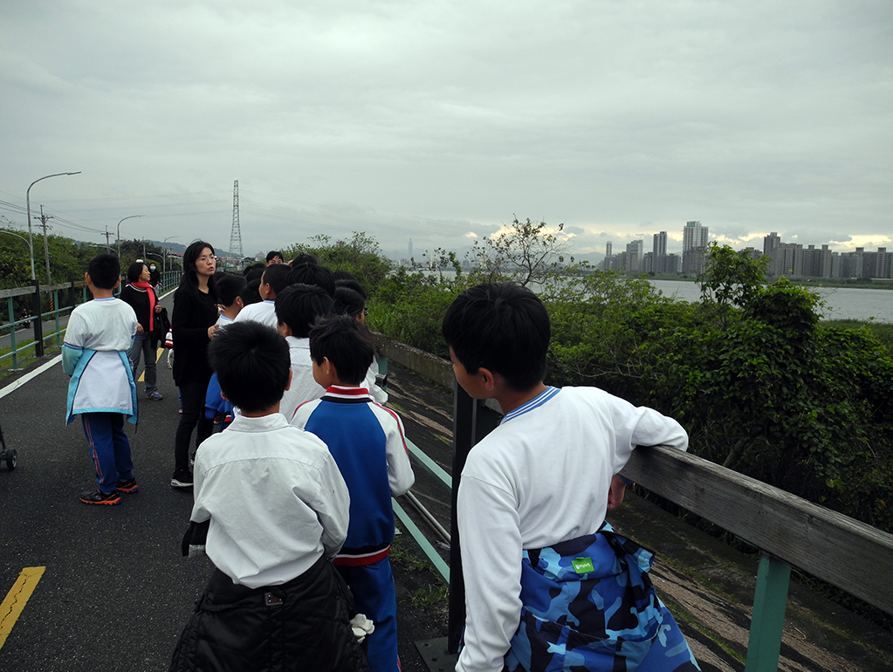
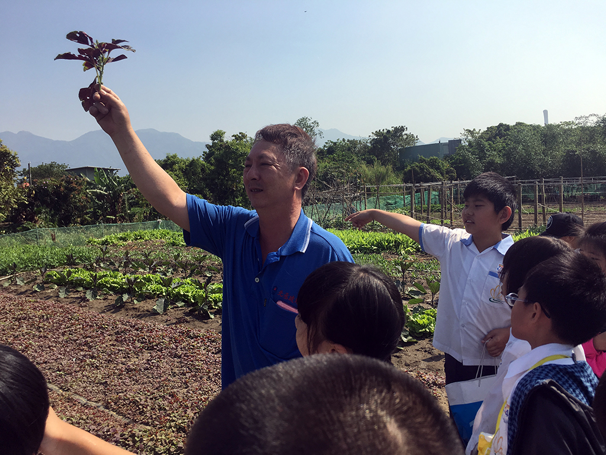

| 標題 | 108.03.27訂定研究主題 |
| 內容 | 因為我們在網路上曾經閱讀了一篇由陳文宗先生撰寫的文章，內容是描述他小時候在社子島的童年回憶，裡面很多事情是現在的我們都不曾做過的，也勾起了我們想一探究竟的興趣，於是經過大家的討論，我們決定以「追蝶抓魚~社子島的小農時光」作為此次研究的主題，並回家詢問爸媽，開始蒐集資料。 |
| 照片 |
| 標題 | 108.04.02進行「河岸話古今」的課程 |
| 內容 | 今天我們從學校出發，沿著圍牆邊的小巷，先經過李和興宅，再登上河堤，我們沿著自行車步道，往溪州底渡船頭的方向前進，一邊欣賞淡水河岸的風景，一邊聽老師訴說這裡以前的故事，原來我們以前最主要的交通工具是舢舨船！ |
| 照片 |  |
| 標題 | 108.09.11研究方法教學 |
| 內容 | 我們利用一個週三下午進行小農探察小隊的集訓，今天皓程老師先教我們如何使用Google協作平台進行共同編輯，如何將蒐集的多媒體檔案上傳到雲端硬碟和分享；接下來是麗華老師教我們如何進行專題研究，學習擬定研究的架構，以及訪問的禮貌和技巧，然後我們也要開始回家多練習台語了！ |
| 照片 |
| 標題 | 108.11.06社子島菜園圳道實地考察 |
| 內容 | 這次的週三下午我們騎著車繞了社子島一小圈，想看看目前菜園種植的狀況，剛好遇到一位親切的居民王先生，與我們分享種菜經驗談，還有這附近農業的發展。 |
| 照片 |
| 標題 | 108.12.11訪問宇軒阿嬤 |
| 內容 | 阿嬤跟我們分享她嫁來社子島以後社區發生的事情，也分享她小時候最常玩的草編玩具，並一口答應有空要來學校教大家怎麼做，我們都覺得很開心也很期待！ |
| 照片 |
| 標題 | 108.12.17進行「環境大探索」課程 |
| 內容 | 今天我們分頭行動，六年級的路線是島頭公園淨灘，再到李忠記宅和威靈廟參觀。我們一群人先搭乘公車到公車路線最後一站富洲里站下車，步行一下就可以抵達雙河匯的島頭公園，今天的天氣很好，風景很漂亮，遠方的關渡宮和關渡大橋都清晰可見，水利處的導覽老師也趁著退潮帶著我們大家去潮間帶看招潮蟹。第二站是社子島著名的古宅「李忠記」，由美學會的美芳老師帶我們參觀，她細心地為我們解說建築的特色和屋主以前的故事，還介紹了生態廁所。最後我們還順著延平北路從九段走回八段的學校，途中順道參觀威靈廟，也聽了老師講了威靈公樂於助人的小故事。今天真是收穫滿滿的一天！ |
| 照片 |
| 標題 | 108.12.17進行「濕地達人秀」課程 |
| 內容 | 我們五年級的今天目標是去社六濕地，我們沿著自行車步道走到河濱公園以後，德祥老師帶著我們認識紅樹林的生態，有水筆仔、招潮蟹和彈塗魚，還可以看見復育的茳茳鹹草，以及周遭出現的候鳥，今天太陽好大，連翠鳥也都蹦蹦跳跳地躲進陰暗樹蔭裡，感覺好有趣！ |
| 照片 |
| 標題 | 108.12.18探訪學長兒時的秘密基地 |
| 內容 | 這一次的活動，我們要跟著我們的大學長陳文宗醫師一起騎著自行車環島，一開始我們先選腳踏車，稍微練習之後我們就出發。第一站，學長介紹的一間以前是柑仔店的地方，他以前都會去買金柑糖，學長說路旁水泥封起來的小水溝，就是以前他抓土虱的地方，後來又繞去田邊看看以前抓大肚魚的小河溝，可惜現在也都沒有魚了！第二站我們到了學長的秘密基地，他以前都會去抓蝴蝶和蜻蜓，我覺得非常有趣；第三站，我們來到了舊堤防和新堤防的交叉點，學長說以前只要颱風一來舊堤防常常會被暴漲的河水沖破，有時候颱風太強，家裡的屋頂會被掀開，他們就要趕緊到鄰居家的水泥樓仔厝避難；我們還有下去舊堤防走，好像在秘境探險，沿路有好多鬼針草、狗尾草和蘆葦等等，真的好開心！學長還有問我們基隆河對岸的綠色建築物以前是哪一間公司所有，大家絞盡腦汁的想，最後終於有人想出來了；最後一站我們出發前往島頭公園，過去的路程相當的遠，所以學長說可以自己騎過去，可是就是有同學誤解成可以用衝的，於是到了島頭公園就被老師罵了，真是不應該。在回學校的時候有個學弟還因為覺得同學說的笑話太好差點跌倒了三次，真希望他沒事！今天可以跟著學長一起騎車認識社子島，真的很棒，很期待下次學長帶我們去焢土窯。 |
| 照片 |
| 標題 | 109.01.10整理校友訪問逐字稿 |
| 內容 | 富安國小六十週年時曾經訪問了好幾位社區在地的耆老們，但是我們以前都不知道！這次我們在蒐集校史資料的時候意外發現了這些影片，覺得好有價值喔！於是我們決定一邊觀賞影片、一邊打出逐字稿。這些長輩跟我們分享了兒時的生活、社區的環境，以及以前學校的環境和上課的趣事，我們覺得好有趣。之後一定要好好整理，把這些資料跟大家分享，讓大家看看富安國小原來有這麼多厲害、值得敬佩的大學長大學姊們！ |
| 照片 |
| 標題 | 109.01.15撰寫心得與省思 |
| 內容 | 我們陸續進行了許多有趣的課程和訪問，於是我們利用一點時間共同線上編輯，把目前的心得和省思上傳到協作平台，也可以跟同學一起討論值得書寫的地方，指導老師們也可以上去看看學生們的文章，進行批改和錯別字訂正，最方便的是不一定只有在學校才可以共同編輯，在家裡也沒問題，只要記得學校的Gmail帳號就ok！ |
| 照片 |
| 標題 | 109.01.16資料整理簡報與分享 |
| 內容 | 我們使用了Cospaces的軟體來編輯VR社子島的互動式影片，老師讓我們分成五組，每一組四個人，共同編輯一個選定的場景，共有五個，如：福德宮、中洲渡船頭、社六濕地、李忠記宅和李和興宅，如照片中正在分享的是李忠記宅，透過彼此交流的方式，我們也可以看見同學注意的焦點是什麼，以及用什麼樣的角色和動畫方式來介紹這個地方，有的組別真的很有創意！除此之外，也可以搭配手機和Cardboard眼鏡欣賞，會更有臨場感。 |
| 照片 |
| 標題 | 109.01.20宇軒阿嬤的草編玩具製作課 |
| 內容 | 趁著寒假開始的空檔，我們邀請了宇軒阿嬤來學校教我們做用茅草編製的小玩意兒，有可愛的小雨傘和小鳥，一開始麗華老師利用空堂時間去社區周圍蒐集了許多茅草回來，真是辛苦了！等到阿嬤一來，大家都迫不及待的想試試看，不過都還是先乖乖圍著阿嬤，看著阿嬤的示範教學，結果好多同學一下子就上手，真是小小藝術家。後來，我們還發明了草編竹蜻蜓新玩法，大家比賽誰旋轉的竹蜻蜓最慢落地就是勝利者，大家都玩得很開心！ |
| 照片 |
| 標題 | 109.01.21富安農趣多 |
| 內容 | 我們想到了以前三年級也有進行過富安農趣多的課程，於是我們又再次挖出以前拍的照片，並開始回憶以前小筑爸爸曾經帶我們去逛過學校附近的菜園，看過許多種各式各樣的蔬菜，有的都忘了叫什麼名字，就趕緊跟老師一起去請教專家。另外，小希阿公也有讓我們去他們家的菜園練習怎麼割菜、割地瓜葉，還有還有地瓜葉達人俊明會長，也來過學校分享，也多虧了他們，讓我們認識了好多社子島的時令鮮蔬，以及更了解農人們種菜賣菜的甘苦談。 |
| 照片 |  |
| 標題 | 109.02.20網頁製作 |
| 內容 | 由於過年之後新型冠狀病毒肆虐，所以我們其實不太能有大家一起聚集在一起的時間，值得慶幸的是，我們之前本來就是採用線上協作平台共編網站的雛形，在家裡也能上傳資料和心得。不過我們也得趕在截止日之前與老師一起合作完成最後網頁的製作，大家來到學校，雖然戴著口罩，但都是聚精會神的努力完成喔！ |
| 照片 |